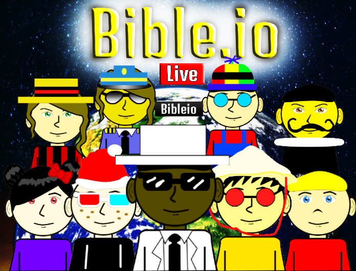

Bible.io is an online program and educational software which features around-the-world online global massive multiplayer Christian gaming and competition, biblical and Christian based learning, exciting Christian literature, faith-centered videos, and much more. It's fun for kids and people of all ages. It's online, it's massive, it's global, it's fun, it's Bible.io!!!
Bible.io was first founded in the year 2025, on August 24 by a group of young Christians, programmers, and artists, people who aspired to make the Bible fun and learning interesting for all. It was originally built with a block based visual programming language, after that we switched to JavaScript and HTML 5.
For a long time, kids have been left out of religion. Parents don't take their kids to help out with missionary work. Parents don't want to take their kids to church because they think it's only for big kids, and the mature. But we believe that every child deserves to know his or her Creator. Everyone, whether, kid, teenager, adult, or old, deserves to know their God. Christ didn't die for the saints, he died for us all. And that's where things begin to change. "For God so loved the world, that he gave his only begotten Son, that whosoever believeth in him should not perish, but have everlasting life." - John 3:16. God wants all of his children to shine, and be a light in a dark and complex world. (Matthew 5:16)
Our goal is to make the Bible fun and interesting for kids and people of all ages. Lots of kids these days find the Bible boring, and would rather play more stimulating things such as games, well here at Bible.io we do both, we've turned the Bible into a fun interactive Website, not just limited to games, but videos, articles, you can even design your own customizable bibletar to represent you in online global competitions around the world. Bible.io is meant to be fun, and engage not just kids, but teens, adults, and people across all ages and ethnicities. We hope you have fun here at Bible.io and remember, it's online, it's massive, it's global, it's fun, it's Bible.io
We hope to reach millions in fact billions around the world, with our FREE and FUN website. Remember, Jesus loves you and he died to save you from your sins, and he wants to see you with Him in heaven. God bless you all!
Bible.io can be used pretty much anywhere, it can be used at homes, schools, even in church settings and beyond. We provide different material for users to work with, such as the Bible which can be read at the user's own pace, literature such as novels, short stories, poems, articles, biographies which are all Christian based and much more. The Bible.io Library not only encourage users to read, but improves literacy skills. Besides studies show that the more a person reads, the more likelier they are going to perform better on tests and exams. Reading exposes you to the world and opens you up to new ideas, reading helps you learn new things and helps people stay informed. Bible.io is supposed to be exciting and engage people of all ages. It's never supposed to get boring, Bible.io is still under massive development and there are still many areas that need to be refined. We are always looking for way to expand and meet people's diverse needs. We hope you have a wonderful experience here at Bible.io, and please feel free to reach out to us if anything is wrong.